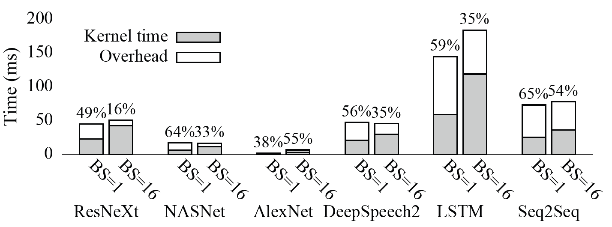
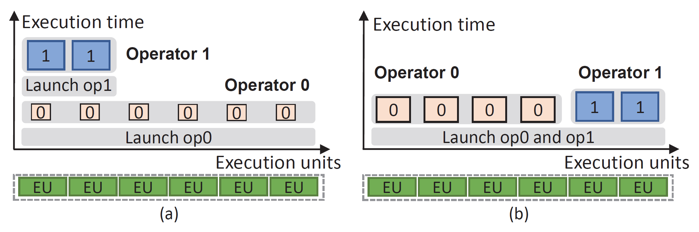
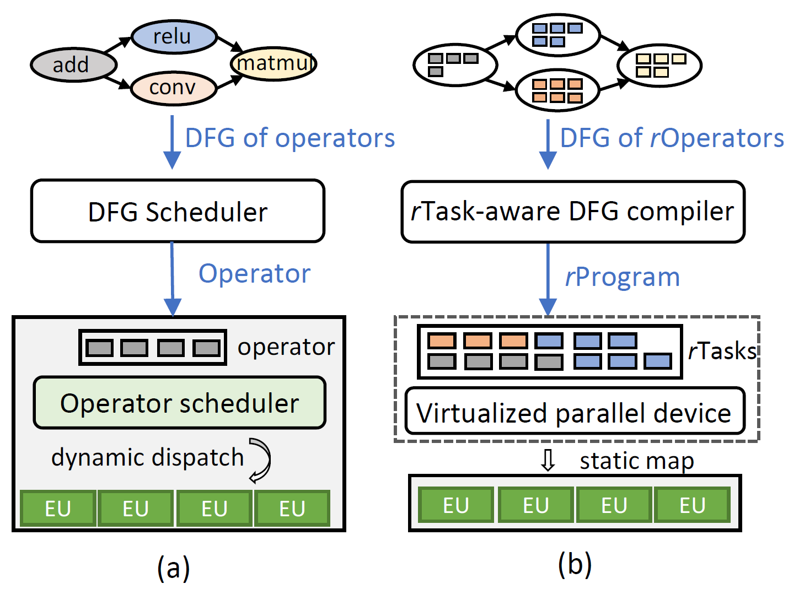
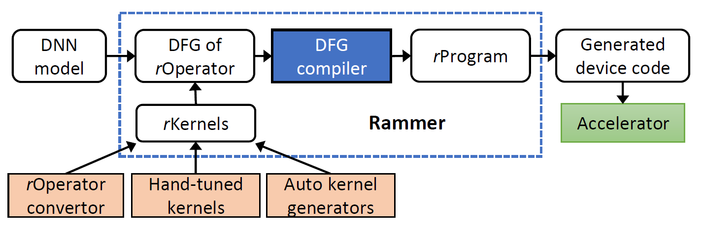
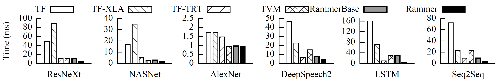
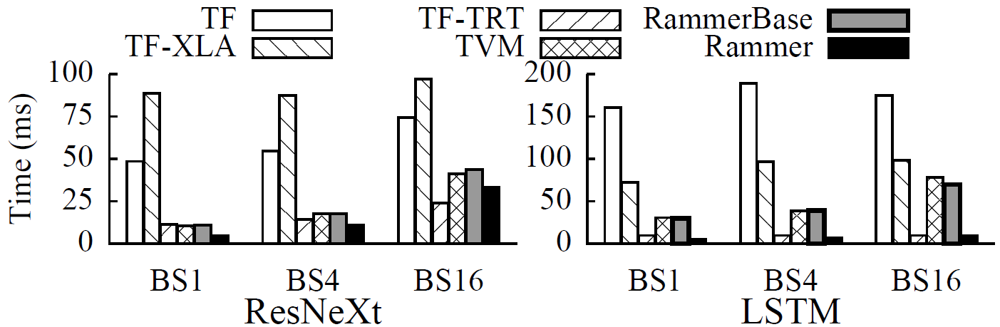
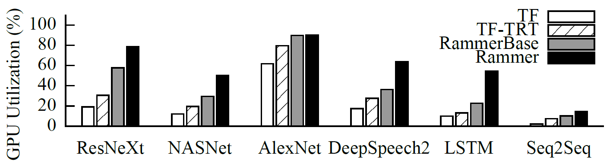
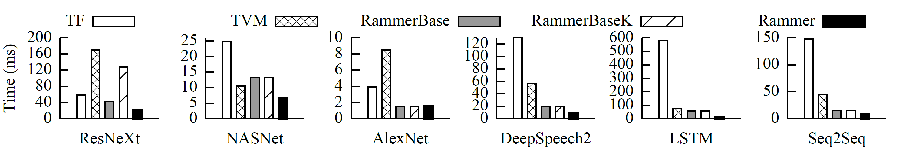

Rammer: Enabling Holistic Deep Learning Compiler Optimizations with rTasks
OSDI ’20
gpu
systems
training
serving
compilation
Rammer: Enabling Holistic Deep Learning Compiler Optimizations with rTasks
Background & Motivation
DNN Computation Model
- DNNs are modeled as Data Flow Graphs (DFG).
- Two levels of parallelism:
- Inter-operator: Independent nodes in the DFG can run in parallel.
- Intra-operator: A single operator (e.g., MatMul) has internal data parallelism.
The Two-Layered Scheduling Gap
- Layer 1: Inter-operator (Software)
- Frameworks (TensorFlow, PyTorch) schedule operators based on dependencies.
- Layer 2: Intra-operator (Hardware)
- Opaque libraries (cuDNN) or hardware schedulers map operator kernels to execution units.
- Problem: The two layers are decoupled. The framework treats operators as “black boxes.”
Inefficiency 1: Low Hardware Utilization

- Accelerators (GPUs) are massive parallel devices.
- Even with BS=16, a single operator still cannot saturate the device.
Inefficiency 2: High Scheduling Overhead

- Launching kernels involves significant CPU-side overhead (driver, context creation, PCIe).
- For small operators, the overhead exceeds the actual computation time.
Inefficiency 3: Suboptimal Co-scheduling

- Existing: Operators run sequentially or rely on hardware multi-streaming (often inefficient).
- Ideal: Co-schedule independent operators to fill the device.
- Current frameworks lack the interplay between inter- and intra-operator scheduling.
Rammer’s Goal
- Holistic Optimization: Manage inter- and intra-operator parallelism together.
- Compile-time Scheduling: Move scheduling decisions off the critical path.
- White-box Approach: Expose hardware execution units to the compiler.
System Design
Overview: Rammer vs. Existing Frameworks

- Existing: Dynamic dispatch of opaque operators.
- Rammer: Static mapping of fine-grained tasks (
rTasks) to virtualized hardware (vDevice).
Abstraction: rOperator and rTask
- rTask: The minimum schedulable unit of computation (e.g., a tile of MatMul).
- rOperator: A group of independent, homogeneous
rTasks(e.g. a whole MatMul). - Breaks the “black box” boundary of traditional operators.
Abstraction: Virtualized Parallel Device (vDevice)
- vDevice: Abstracts the accelerator hardware.
- vEU (Virtual Execution Unit):
- Represents a physical CU (e.g., GPU SM).
- Executes a sequence of
rTasks.
- Mechanism:
- Allows the compiler to assign specific
rTasksto specificvEUsexplicitly. - Bypasses the non-deterministic hardware scheduler.
- Allows the compiler to assign specific
The rTask-aware DFG Compiler

- Input: DFG of
rOperators. - Profiling: Measures execution time of individual
rTasks. - Scheduling: Generates a static execution plan (
rProgram). - Output: A single fused kernel (or few kernels) containing the entire schedule.
Scheduling Policy
- Wavefront Scheduling:
- Identifies independent operators (wavefront).
- Packs
rTasksfrom these operators onto availablevEUs.
- Holistic Decision:
- Can choose a “slower” kernel implementation if it uses fewer resources, allowing other operators to run in parallel.
- The optimization goal is to achieve lowest end-to-end latency.
Runtime: Persistent Thread Blocks
- Persistent Thread Blocks (PTBs):
- Rammer launches long-running thread blocks that stay resident on the GPU.
- These PTBs act as
vEUs.
- Logic:
- They fetch
rTasksfrom the pre-compiled static plan. - Eliminates repeated kernel launch overhead.
- They fetch
Fine-grained Synchronization
- Barrier-rTask:
- A lightweight synchronization primitive based on counter.
- Ensures dependencies are met between
rTaskson differentvEUs. - Avoids global device synchronization (like
cudaDeviceSynchronize).
Evaluation
Environment Setup
- Hardware:
- NVIDIA Tesla V100
- AMD Radeon Instinct MI50
- Graphcore IPU
- Baselines:
- TensorFlow (TF)
- TensorFlow-XLA (Compiler)
- Apache TVM (Compiler)
- TensorRT (Vendor Optimized Library)
- RammerBase (Still 2-layered scheduling)
- Rammer
End-to-End Performance (Batch Size = 1)

- Rammer vs. TF: Up to 33.9x speedup.
- Rammer vs. TVM: Up to 6.4x speedup.
- Rammer vs. TensorRT: Outperforms vendor-optimized library on all benchmarks.
Performance with Larger Batch Sizes

- Even with larger batches (BS=16), Rammer maintains advantage.
- Outperforms TF by 2.25x on ResNeXt.
- Outperforms TVM by 1.25x on ResNeXt.
GPU Utilization

- Rammer significantly improves hardware utilization compared to TF and TensorRT.
- Achieved by effectively packing
rTasksfrom different operators onto the GPU simultaneously.
Cross-Platform Generality: AMD GPUs

- Rammer abstractions work on AMD ROCm platform.
- Up to 41x speedup over TensorFlow on LSTM-TC.